記事・リンクを検索
⌘K
46 件のポスト
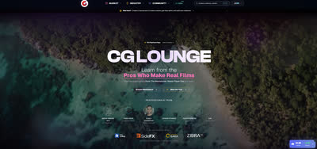
映画・VFX業界のプロがチュートリアルやアセットを直接販売するマーケットプレイス。
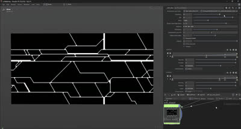
SideFXでインターンをしているLei W.氏による、COPsを使ったSci-fi Panelの制作手法。Pythonでレイアウトをデザインし、COPsでHeightとディテールを追加、Houdini Engine経由でUEに渡し、Naniteでテッセレーション・ディスプレイスメントを実装するワークフロー。

NVIDIAが公開する「OpenUSD Interactive Glossary」。Stage、Layer、Prim、Composition ArcsなどOpenUSDの主要概念を、インタラクティブな図解で視覚的に理解できるツール。

Houdiniでガウシアン・スプラッティングにRigを組んでアニメーションさせる無料チュートリアル「Animate Gaussian Splats with Houdini」。無料のシーンファイルも配布されている。
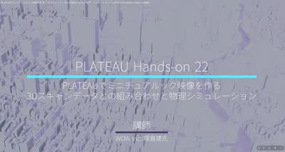
塚島氏によるPLATEAU（3D都市モデル）とHoudiniを組み合わせた映像作品のチュートリアル。ミニチュアルックの再現方法などが紹介されており面白い内容。
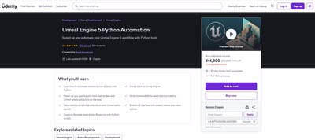
Pythonを使ってUnreal Engineのワークフローを自動化する方法を学べるUdemyコース。

Houdiniの基本原則を扱うYouTubeプレイリスト「Principled Houdini」。

「Displace along normal」を使ってUV展開済みメッシュにディスプレイスメントを加える際、UVをvertexからpointにpromoteしてVOPで編集する必要があるというTips。

鈴木氏の許可を得て、公開されているHoudiniファイルから参考になった点をまとめたnote記事「Houdiniファイルを読み解く vol.1」。
ポリフォニー・デジタルによるこれまでの講演記事がまとめられたページ。Houdiniや Pythonに関する有料級の記事を無料で読める。

SideFX Labsの「Labs Lot Subdivision」を使った作例。パラメータの説明や知られていない機能・使い方も紹介されている。

Labs Lot Subdivisionについて、建物の区画作成やレンガパターン、植物・木の配置など、思いつかなかった応用アイデアが多くあり面白いという感想。

テクスチャアーティストMax Kutsenko氏による作品「Wooden Roof Shingles」。Houdiniでプロシージャルに屋根と煙突を生成し、UEでシェーディング・ライティングまで行う手法。特にSubstance Designerでノイズから強弱グラフを生成しマスクとして使う手法が興味深いと評している。
目を鍛えるため、毎日1つ、自分が良いと思った作品を分析するチャレンジを開始する。
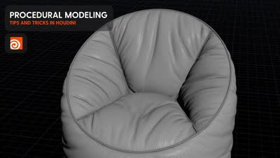
プロシージャルモデリングで使える様々なテクニックをまとめた動画「All* the Procedural Modeling tricks in one video」。何ができるか知ることで引き出しが増えるという考えも添えている。
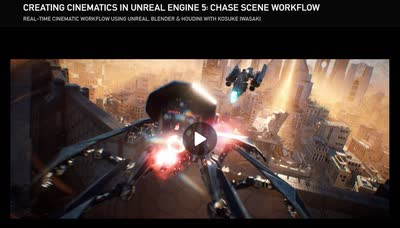
岩崎氏による無料のチュートリアルがGnomon Workshopで公開されていること。
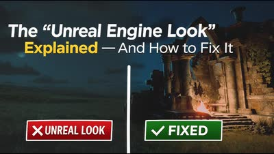
いわゆる「Unreal Engineっぽい見た目」の原因と、その解消方法を解説した動画。

HoudiniのVEXを使ったプロシージャルな木材シェーダーの作り方を解説する動画。

HoudiniのLOPsにおけるUSD Render Primsについて解説する動画。
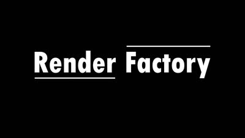
HoudiniでのPythonの使い方を学べるサイト「Render Factory」。Python基礎、Houdini内でのPython、UI作成といったレッスンが用意されている。
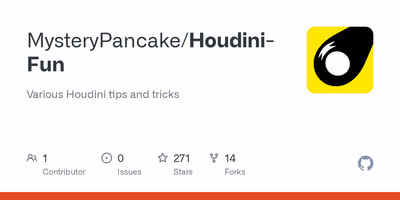
Houdiniに関する有益なTipsがまとめられたGitHubリポジトリ「MysteryPancake/Houdini-Fun」。

MayaでPySide2の.uiファイルをそのまま使うべきか、Python化して利用すべきかを解説するUnzai氏の記事。
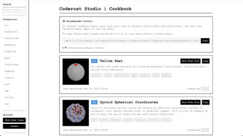
Houdiniで便利なノードセットアップがまとめられているサイト「codercat」。
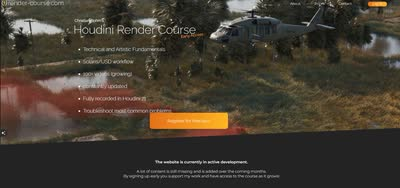
ILMやFramestoreで勤務経験のあるChristian Bohm氏によるHoudiniのチュートリアル。
HoudiniでPySideを使ったUIを作成する方法を解説する動画「Creating Pyside UI in Houdini」。
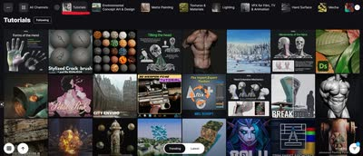
ArtStationの「Tutorial」「Technical Art」「Web and App Design」といったページには、見落とされがちだがTipsがまとまっていることが多いという活用法。
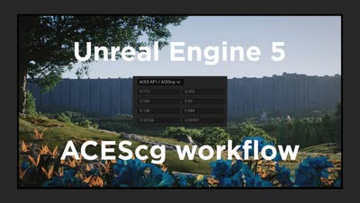
Unreal Engine 5でのACEScgカラーワークフローについて簡単に解説する動画。

Houdini×USDを使ってデジタルツインを生成し、自動運転シミュレーションに活用しているAurora Innovationの事例を紹介するCGWORLDの記事。同社には元Pixarのアーティストも在籍している。
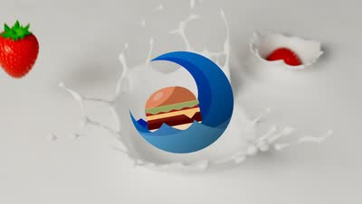
流体シミュレーションツール「Axiom」を開発したMatt氏が、新しいソルバーをリリースした。

Adrien Lambert氏のチュートリアルに、Solaris、Copernicus、PDG/Topnet、VDBなどを扱う新しい内容が追加された。
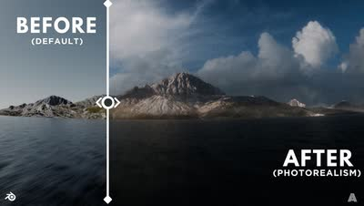
Blender 5.0でフォトリアルな空を表現する方法を解説した動画。
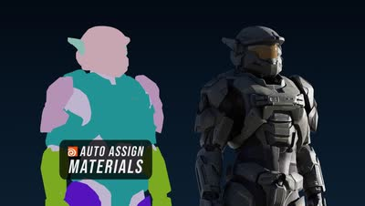
Houdini Solarisで名前を使ってマテリアルをアサインする方法を解説した動画。
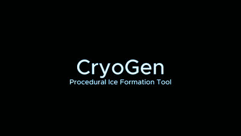
プロシージャルアートは「まあまあ良い」で終わらせず、Heroクオリティを目指すべきという主張の記事。
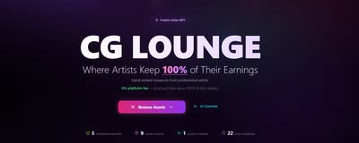
Image EngineのLighting Supervisor、Arvid Schneider氏が、CGアセットやチュートリアルを手数料なしで販売できるプラットフォームをローンチしたこと。GumroadやArtStationに比べ露出は下がるが、コアな層には届くとしている。
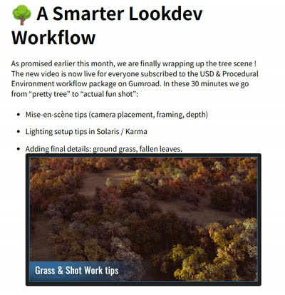
Adrien Lambert氏のSolarisチュートリアルが更新された。Gumroadでクーポンコード「AUTUMN」により30%オフになるとのこと（期間限定）。
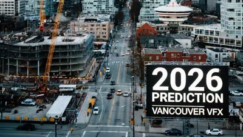
2026年のバンクーバーVFX業界についての予測記事（LinkedIn）。バンクーバーがロンドン・LAと並ぶ世界トップ3のVFX都市であり、DNEG・ILM・Sonyなど一流スタジオが集中していることなどに触れている。
ILMのGeneralist Head of Departmentによる、デモリールと履歴書に関するアドバイス（翻訳）。「一番良い作品を最初に置くこと」など、リール構成についての助言が含まれる。

斎藤晃氏によるプロシージャルモデリングの講演動画「Procedural Hard Surface Design」（Houdini Hive Japan、Part1・Part2）。
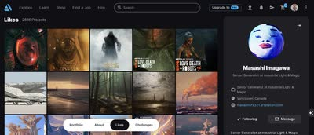
ArtStationで上手いアーティストの「いいね（Likes）」ページを見ることで、探さなくても高品質な作品やTipsに出会えるという学習方法。
William Faucher氏による、Unreal Engineの新ツール「MEGAPLANTS」を解説するYouTubeチュートリアル。
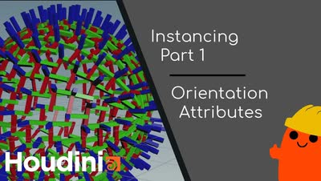
HoudiniのInstanceに必要な知識を解説する動画（全3パート）。丁寧な説明が特徴。
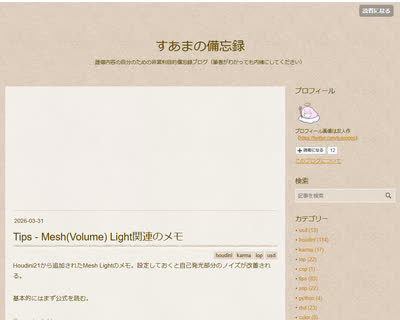
すあま氏（@suamaGod）の個人ブログ「すあまの備忘録」。Houdini・USD・Karma・LOPs・Pythonなど、実務で使えるTipsが幅広くまとめられている。同氏が登壇したUSD-Solarisワークフロー実践セミナーのレポート記事（CGWORLD）も公開されている。

元Pixarのエンジニアである手島孝人氏によるCEDEC講演「ピクサー USD 入門 新たなコンテンツパイプラインを構築する」のスライド。
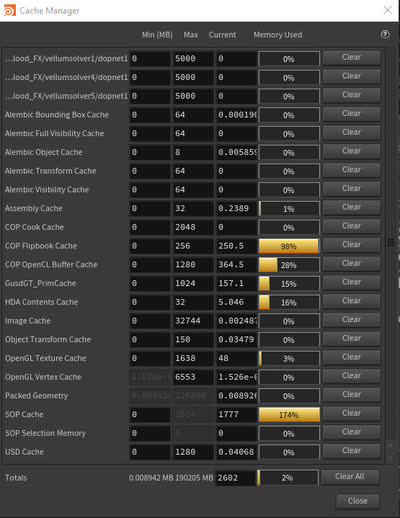
Houdiniで「Alt+Shift+M」を押すとキャッシュマネージャーが開けるというショートカットTips。
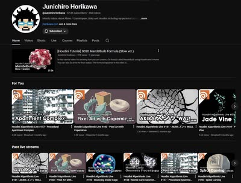
HoudiniのVEXを学びたい人向けに、Junichiro Horikawa氏のYouTubeチャンネル。
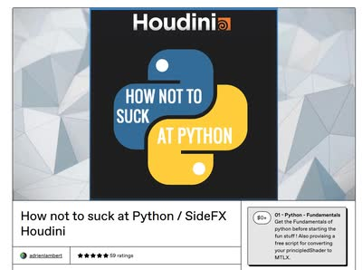
HoudiniでのPythonの使い方を学べるチュートリアル動画「How not to suck at Python」。制作を効率化するスクリプトを自分で書けるようになったと、自身の学習体験にも触れている。